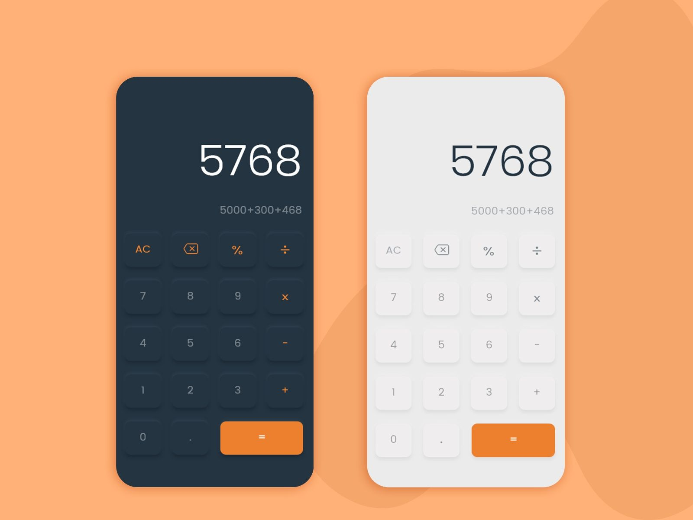

Project
CalculatorDigital calculators have intrigued me ever since I became a designer. I found most of the available ‘free’ calculators to be functionally performant but visually boring and cluttered. Furthermore, the hideous AD banners that most of them have made it even worse. |
 |